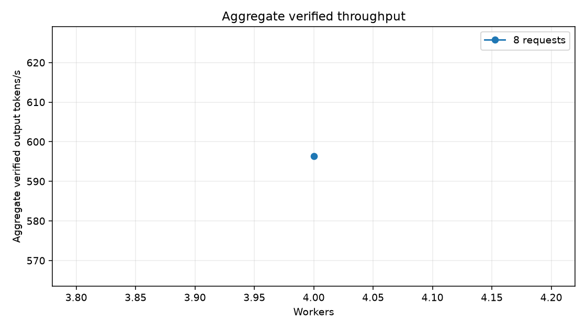
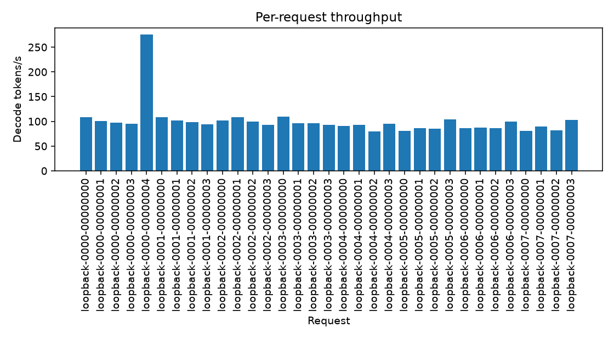
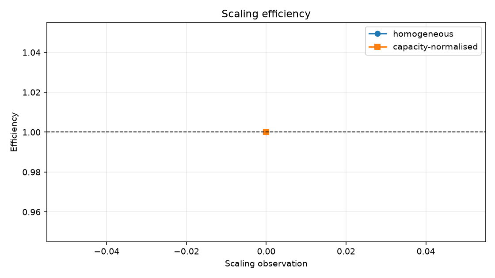
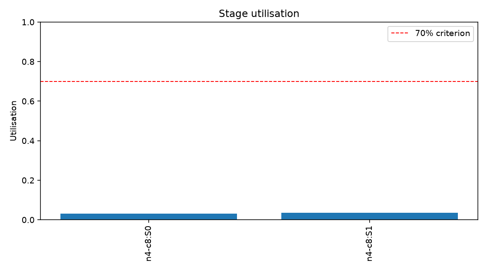
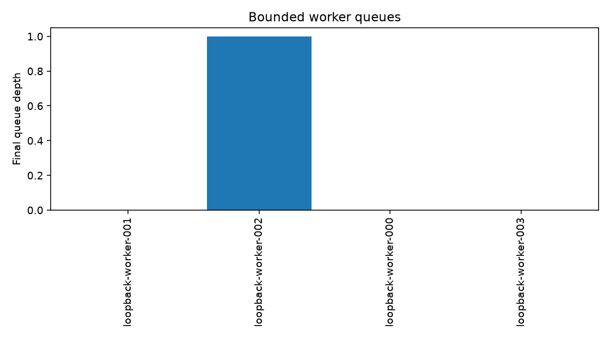
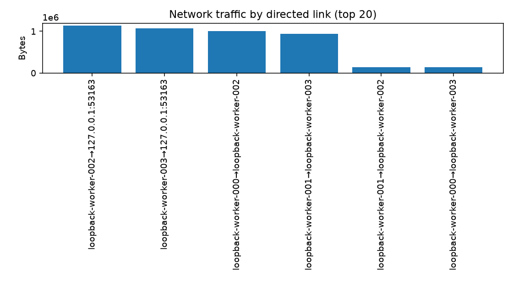
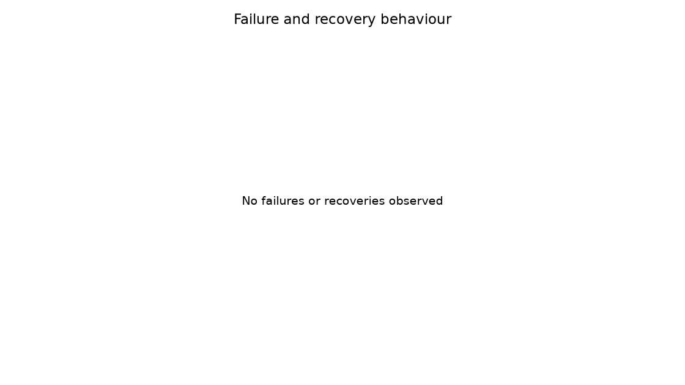

| Experiment integrity | FAIL |
|---|---|
| Correctness | FAIL |
| Direct data plane | FAIL |
| Replica utilisation | FAIL |
| Capacity prediction | FAIL |
| Scaling hypothesis | FAIL |
| Overall | FAIL |
| Execution mode | single-host-loopback |
|---|---|
| PASS or FAIL | FAIL |
| Primary aggregate verified output tokens/s | 596.2948 |
| Baseline aggregate verified output tokens/s | 596.2948 |
| Node count | 4 |
| Concurrent request count | 8 |
| Model | synthetic-loopback-4gib-calibrated |
| Values | measured local synthetic execution and local gRPC transport; no emulated delays |
| Failed acceptance criteria | 16 |
| Criterion | Status | Observed | Required | Interpretation |
|---|---|---|---|---|
| completed_verified_requests | PASS | 33 | "> 0" | Only successfully completed, verified requests count. |
| throughput_milestone | FAIL | {"tokens_s": 596.2948409538318, "duration_s": 0.2213669999036938, "workers": 4} | {"tokens_s": ">= 20.0", "duration_s": ">= 30.0", "workers": "> 1"} | The milestone must be sustained after warm-up and use multiple workers. |
| steady_state_stage_utilisation | PASS | 0.03152253946503708 | ">= 0.0" | Uses the least-utilised stage, not the mean. |
| capacity_balance | PASS | 0.0 | "<= 1.0" | Maximum service-capacity gap relative to the largest stage. |
| accepted_request_completion | PASS | 1.0 | ">= 1.0" | Completion requires successful verification. |
| two_consecutive_capacity_doublings | FAIL | [] | "two consecutive gains >= 1.5 at concurrency >= 16" | Aggregate throughput is compared only at matching concurrency. |
| nonnegative_useful_node_marginal_throughput | FAIL | [] | "all >= 0" | A negative observed step fails even if a later step recovers. |
| capacity:model_larger_than_each_worker | PASS | {"model_bytes": 4294967296, "largest_worker_bytes": 2211908157} | "model_bytes > every worker memory cap" | Measured capacity evidence. |
| capacity:no_worker_loads_full_model | PASS | {"stage_count": 2} | "each assigned shard < full model" | Logical memory accounting in this execution mode. |
| capacity:distributed_real_model_valid_output | FAIL | "not independently validated" | "valid Qwen3 output from at least two workers" | Not demonstrated by this simulation run; physical or real-model evidence is required. |
| correctness:greedy_token_identity | FAIL | "not run" | "distributed token IDs exactly equal reference" | Not demonstrated by this simulation run; physical or real-model evidence is required. |
| correctness:stage_tolerance | FAIL | "not run" | "all intermediate outputs within configured tolerance" | Not demonstrated by this simulation run; physical or real-model evidence is required. |
| correctness:cache_replay_preserves_output | FAIL | "not run" | "subsequent output unchanged after replay" | A timing simulation is not numerical correctness evidence. |
| correctness:corrupt_workers_detected | FAIL | "run may contain probabilistic audit events" | "deterministic corrupt-worker integration test passes" | Project acceptance is asserted by the dedicated executable test. |
| correctness:invalid_shard_hash_rejected | FAIL | "not part of this run" | "dedicated shard-integrity test passes" | Run artifacts do not replace the correctness test. |
| scaling:two_consecutive_doublings | FAIL | [] | "two consecutive >= 1.6x gains" | Simulation evidence remains labelled simulation. |
| scaling:adding_eligible_worker_never_reduces_throughput | FAIL | [] | "all observed marginals >= 0" | Compared within this run's execution mode only. |
| scaling:stage_utilisation | PASS | 0.03152253946503708 | ">= 70%" | Least-utilised stage during the simulated run. |
| scaling:balanced_stage_capacity | PASS | 0.0 | "<= 20% gap" | Configured/measured service-capacity balance. |
| throughput:20_verified_tokens_s_for_5_minutes | FAIL | {"tokens_s": 596.2948409538318, "duration_s": 0.2213669999036938, "workers": 4} | ">=20 tokens/s, >1 worker, >=300s" | Execution-mode label is preserved. |
| resilience:99_percent_completion_at_10_percent_hourly_churn | FAIL | {"churn_rate": 0.0, "completion": 1.0, "failures_during_active_requests": null} | "churn=0.10/hour, active failures>0, and completion>=0.99" | Requires the specified churn arm, not extrapolation. |
| resilience:throughput_degradation_below_20_percent | FAIL | "no paired no-churn baseline in this run" | "<20% degradation versus matched baseline" | A paired baseline comparison is required. |
| resilience:failed_stage_reconstructed | FAIL | "timing events only" | "exact replay integration output remains correct" | Numerical replay must be demonstrated outside simulation. |
| resilience:corrupt_workers_quarantined | FAIL | "probabilistic simulation is not dedicated test evidence" | "dedicated corruption experiment and audit evidence" | No claim is made from an arm that may sample no corrupt operation. |
| node_count | concurrent_requests | throughput | throughput_gain | marginal_throughput | homogeneous_scaling_efficiency | capacity_normalised_efficiency |
|---|---|---|---|---|---|---|
| 4 | 8 | 596.2948 | 1.0000 | 0.0000 | 1.0000 | 1.0000 |
| request_id | status | verification_state | decode_tokens_s | time_to_first_token_s | end_to_end_s | retry_count | route_changes |
|---|---|---|---|---|---|---|---|
| loopback-0000-00000000 | completed | verified | 108.8139 | 0.0137 | 0.0413 | 0 | 0 |
| loopback-0000-00000001 | completed | verified | 100.3200 | 0.0160 | 0.0459 | 0 | 0 |
| loopback-0000-00000002 | completed | verified | 97.9215 | 0.0176 | 0.0482 | 0 | 0 |
| loopback-0000-00000003 | completed | verified | 95.4943 | 0.0137 | 0.0451 | 0 | 0 |
| loopback-0000-00000004 | completed | verified | 275.3355 | 0.0120 | 0.0229 | 0 | 0 |
| loopback-0001-00000000 | completed | verified | 108.7102 | 0.0149 | 0.0425 | 0 | 0 |
| loopback-0001-00000001 | completed | verified | 101.5266 | 0.0177 | 0.0472 | 0 | 0 |
| loopback-0001-00000002 | completed | verified | 98.7674 | 0.0182 | 0.0486 | 0 | 0 |
| loopback-0001-00000003 | completed | verified | 94.0250 | 0.0168 | 0.0488 | 0 | 0 |
| loopback-0002-00000000 | completed | verified | 101.2860 | 0.0155 | 0.0451 | 0 | 0 |
| loopback-0002-00000001 | completed | verified | 108.2935 | 0.0172 | 0.0449 | 0 | 0 |
| loopback-0002-00000002 | completed | verified | 99.7002 | 0.0184 | 0.0485 | 0 | 0 |
| loopback-0002-00000003 | completed | verified | 92.8922 | 0.0174 | 0.0497 | 0 | 0 |
| loopback-0003-00000000 | completed | verified | 109.4383 | 0.0158 | 0.0432 | 0 | 0 |
| loopback-0003-00000001 | completed | verified | 95.7405 | 0.0175 | 0.0488 | 0 | 0 |
| loopback-0003-00000002 | completed | verified | 96.5301 | 0.0169 | 0.0479 | 0 | 0 |
| loopback-0003-00000003 | completed | verified | 92.7360 | 0.0170 | 0.0494 | 0 | 0 |
| loopback-0004-00000000 | completed | verified | 90.4094 | 0.0161 | 0.0493 | 0 | 0 |
| loopback-0004-00000001 | completed | verified | 92.6029 | 0.0145 | 0.0469 | 0 | 0 |
| loopback-0004-00000002 | completed | verified | 79.2182 | 0.0153 | 0.0531 | 0 | 0 |
| loopback-0004-00000003 | completed | verified | 95.5791 | 0.0159 | 0.0473 | 0 | 0 |
| loopback-0005-00000000 | completed | verified | 80.7507 | 0.0170 | 0.0542 | 0 | 0 |
| loopback-0005-00000001 | completed | verified | 86.5212 | 0.0123 | 0.0470 | 0 | 0 |
| loopback-0005-00000002 | completed | verified | 85.5666 | 0.0135 | 0.0486 | 0 | 0 |
| loopback-0005-00000003 | completed | verified | 103.6116 | 0.0151 | 0.0441 | 0 | 0 |
| loopback-0006-00000000 | completed | verified | 85.8234 | 0.0162 | 0.0511 | 0 | 0 |
| loopback-0006-00000001 | completed | verified | 87.3411 | 0.0135 | 0.0479 | 0 | 0 |
| loopback-0006-00000002 | completed | verified | 85.7846 | 0.0135 | 0.0484 | 0 | 0 |
| loopback-0006-00000003 | completed | verified | 99.6396 | 0.0155 | 0.0456 | 0 | 0 |
| loopback-0007-00000000 | completed | verified | 81.2715 | 0.0196 | 0.0565 | 0 | 0 |
| loopback-0007-00000001 | completed | verified | 89.7242 | 0.0153 | 0.0487 | 0 | 0 |
| loopback-0007-00000002 | completed | verified | 82.3294 | 0.0147 | 0.0511 | 0 | 0 |
| loopback-0007-00000003 | completed | verified | 103.4629 | 0.0124 | 0.0414 | 0 | 0 |







See config.resolved.yaml, environment.json,
model_manifest.json, and the JSONL metric streams in this directory.
Artifact hashes are recorded in artifact_manifest.json.